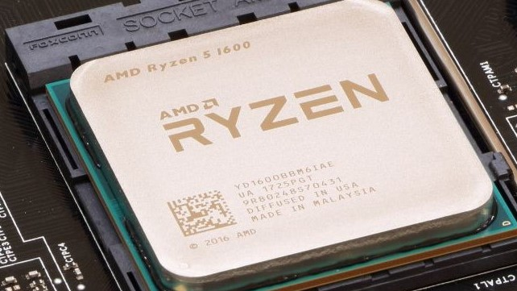
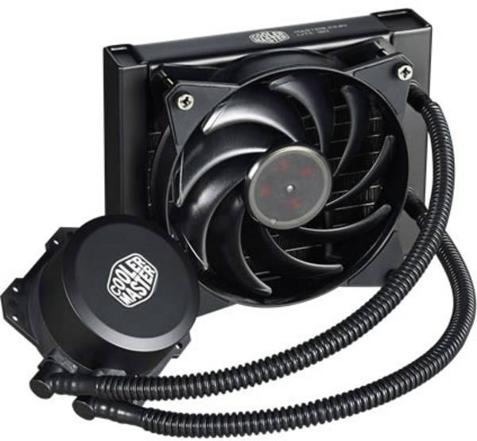
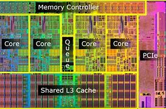

Central Processing Unit
le proceseur de l'ordinateur est le composant qui réalise tous les calculs.
C'est le cerveau de l'ordinateur. Il calcule mais ne réalise pas l'interphase graphique: Le CPU envoie les informations à afficher à l'écran au GPU (carte graphique ) qui gére l'affichage.
Photo CPU
Il y a plusieurs informations importantes qui caractérise la puissance du CPU:
Watercooling: exemple de systéme de refroidissement.
Une cpu est l’ensemble de plusieurs puce electronique
shema cpu
Il y a les bite leur nombre varie
Une memoir cache c elle qui sotck le chiffre qui sont entrain de ce calculer
Le gestionnaire de memoir il gere les info ou elle sont est ou elle fond
Puis les misc io et opi o ce ce qui socupe de la gestion des informatio qui rentre est qui sorte du proserseur
Tout ce partie sont graver dans une puce en silisume
carton jules 1er 7 nsi lycer fulbert